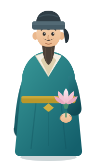

🪷 閱讀密室逃脫
蓮心・君子風骨
北宋周敦頤以蓮喻君子，一百一十九字寫盡高潔情操。請挑戰五關或十關密室，讀懂「出淤泥而不染」的深意！
每關答對即獲得密碼碎片 · 集齊碎片方能逃出密室
請輸入您的姓名，領取專屬結業證書
密碼碎片全數集齊，解開關卡的終極密語
「水陸草木之花，可愛者甚蕃。晉陶淵明獨愛菊，自李唐來，世人盛愛牡丹。予獨愛蓮之出淤泥而不染，濯清漣而不妖……」 —— 北宋・周敦頤〈愛蓮說〉